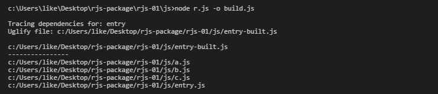
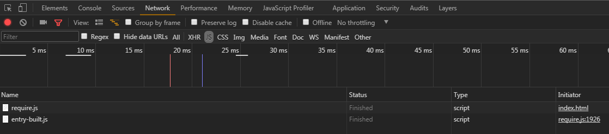

node r.js -o build.js r.js文件dest之后，1M左右功能强大，后续讲解功能
r.js打包之后，切换首页入口文件路径 data-main='./js/entry.js' data-main='./js/entry-built.js'
打包之后的entry-built文件内容，
会自动为每个模块加上id “a”，“b”，“c”，分别都有先加载的模块，这里是空，用[]
define("a",[],function(){return"a"}),define("b",[],function(){return"b"}),define("c",[],function(){return"c"}),require(["a","b","c"],function(n,e,i){alert(n+e+i)}),define("entry",function(){});